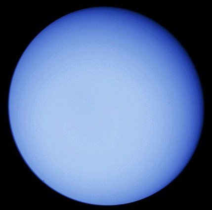

Odległość od Słońca w mln km: 2870
Okres obiegu wokół Słońca: 84,014 lat
Okres rotacji: 10 h 49 min
Średnica (km): 51108
Masa (Ziemia = 1): 14,5
Objętość (Ziemia = 1): 52
Gęstość (g/cm³): 1,27
Prędkość ruchu po orbicie (km/s): 6,8
Liczba znanych księżyców: 27
Uran jest kolejną spośród planet zewnętrznych, będących gazowymi olbrzymami. Z Ziemi jest ledwo widoczny nawet przez teleskop, gdyż znajduje się w odległości 2870 mln km od Słońca. W 1781 roku Brytyjczyk, Williama Herschel, odkrył tę planetę obserwując niebo przez własnoręcznie zbudowany teleskop. Przez to, że nachylenie płaszczyzny równika Urana do płaszczyzny jego orbity wynosi 98°, planeta wiruje wokół własnej osi ruchem wstecznym. Jego pole magnetyczne jest 3 razy silniejsze niż na naszej planecie. Pierścienie Urana, których jest 11, są bardzo niewyraźne i ciężko je zobaczyć z Ziemi. Są jednak mocniejsze od pierścieni Jowisza, a odkryto je w 1977 roku. Uran zielonkawy kolor zawdzięcza chmurom metanu w górnych warstwach atmosfery. Różnice temperatur nie są duże i wynoszą od -208°C do -212°C. Wiele wiadomości o Uranie przekazał na Ziemię "Voyager 2". Dopiero od tej pory znamy dokładnie czas obrotu Urana. Uran wyróżnia się wśród gazowych gigantem tym, że nie ma skalnego jądra. Górna warstwa jego atmosfery składa się głównie z wodoru i helu, a w arstwach niższych tworzą się metanowe chmury. Metan pochłania światło czerwone, dlatego też Uran oglądany z przestrzeni kosmicznej jest zielono - niebieski.